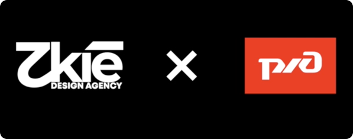
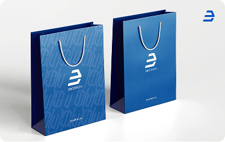

Арвис - создание цикличной экосистемы
Дизайн и разработка цифровых сервисов, сайтов и приложений с нуля. Поиск новых решений для развития существующих продуктов
Дизайн и разработка цифровых сервисов, сайтов и приложений с нуля. Поиск новых решений для развития существующих продуктов Дизайн и разработка цифровых сервисов, сайтов и приложений с нуля. Поиск новых решений для развития существующих продуктов

